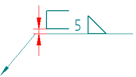

Spacing tab (Dimension Style and Dimension Properties)
The Spacing tab sets spacing options for dimensions and annotations. All options are a ratio of the text value.
The Spacing tab is available in the Dimension Style dialog box and in the Dimension Properties dialog box.
- Text clearance gap
-
Sets the spacing:
-
Between the dimension text and the dimension line.
-
Between the text and the left and right sides of an annotation border.
-
Between the primary and secondary units when using dual dimension unit display.
-
- Dual display vertical gap
-
Sets the space between the primary and secondary units when dual display is active.
- Line spacing
-
Lists and applies the amount of vertical space between lines of text.
-
Single sets the line spacing for each line to display the largest font in the line.
-
5 Lines sets the line space for the line to one-and-a-half that of single lines.
-
Double sets the line spacing for the line to twice that of single lines.
-
- Dimension above line gap
-
Sets the space between the dimension text and the dimension line.
- Horizontal tolerance gap
-
Sets the space between the dimensional value and the tolerance on dimensions.
- Vertical tolerance gap
-
Sets the space between the upper and lower tolerance value on dimensions.
- Vertical limits gap
-
Sets the space between the upper and lower dimensional values on limit dimensions.
- Symbol gap
-
Sets the space between the symbol and the dimension text.
- Prefix/Suffix gap
-
Sets the amount of space between the prefix or suffix and the dimension text.
- Horizontal box gap
-
Sets the space between the dimension text and the horizontal edges of the box on dimensions.
- Vertical box gap
-
Sets the spacing:
-
Between the dimension text and the top and bottom of a dimension box.
-
Between the text and the top and bottom edges of an annotation border.
-
- Three-sided weld symbol offset gap
-
Adjusts the vertical offset between the base of the three-sided weld symbol and the reference line.

Look up more details
Dimension Properties dialog boxGeneral tab (Dimension Style and Dimension Properties)
Units tab (Dimension Style and Dimension Properties)
Secondary Units tab (Dimension Style and Dimension Properties)
Text tab (Dimension Style and Dimension Properties)
Lines and Coordinate tab (Dimension Style and Dimension Properties)
Smart Depth tab (Dimension Style, Dimension Properties)
Terminator and Symbol tab (Dimension Style and Dimension Properties)
Annotation tab (Dimension Style and Dimension Properties)
Feature Callout tab